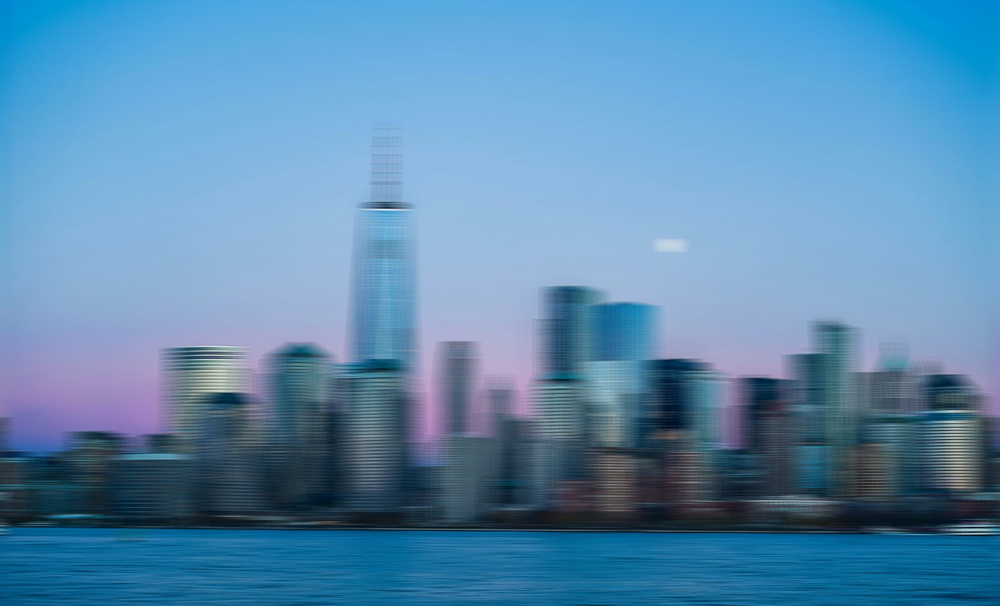
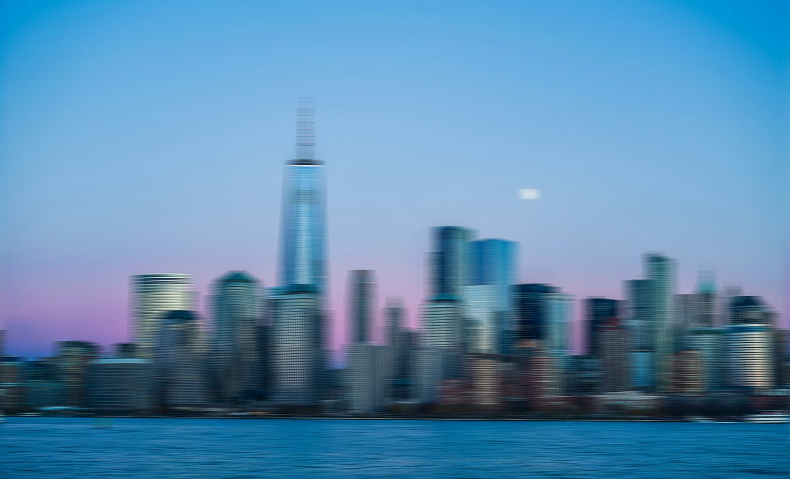
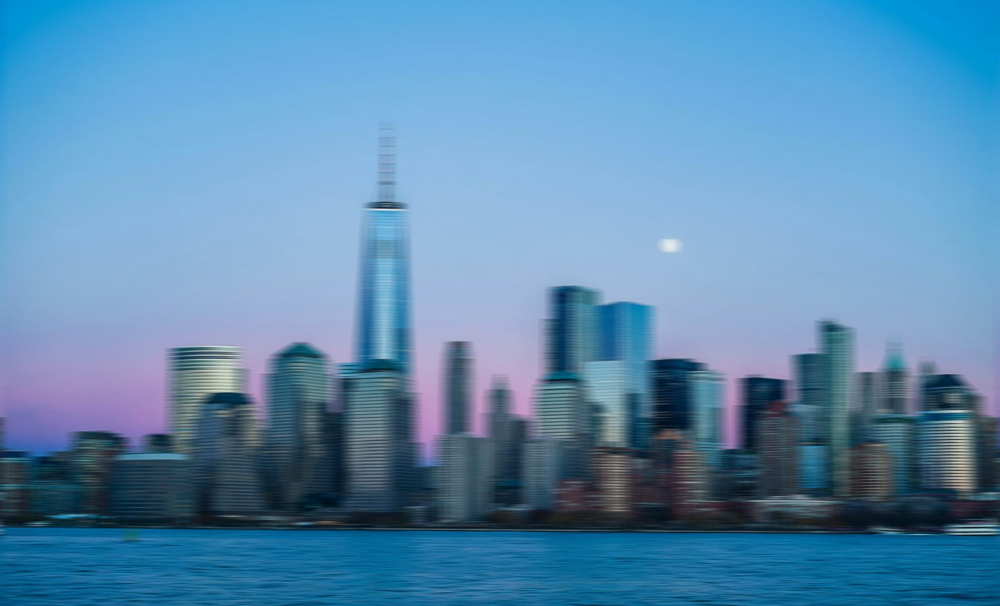
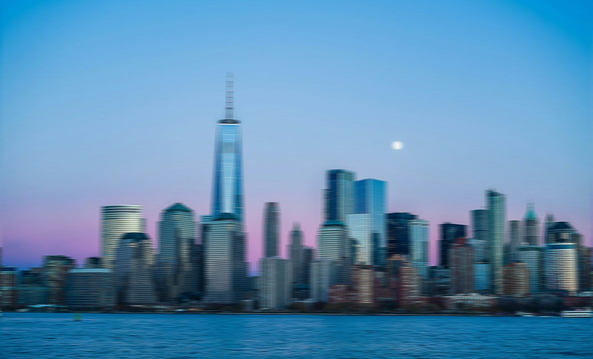
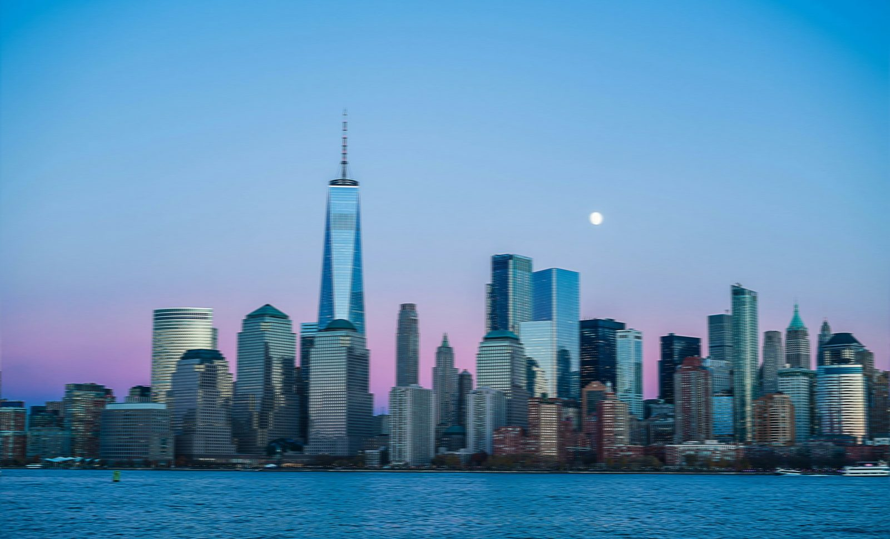
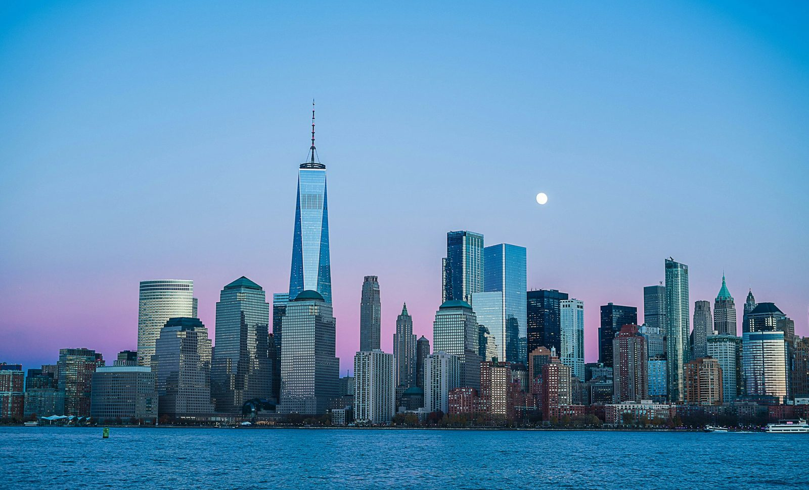

Aperture refers to the opening in a lens through which light enters. A lower f-number means a wider opening, more light, and a shallow depth of field (blurry background). A higher f-number means less light and more depth of field (more in focus). Aperture affects both exposure and how much of your image appears sharp.
Shutter Speed is how long your camera’s sensor is exposed to light. Fast shutter speeds (like 1/1000s) freeze motion, while slower speeds (like 1/10s or longer) blur movement, useful for light trails or motion effects. It’s key for controlling motion and exposure. Slower speeds need a tripod to avoid camera shake and blurriness in your photos.
ISO controls your camera’s sensitivity to light. Lower ISO values (like 100 or 200) produce clean images in bright conditions. Higher ISOs (like 1600 or 3200) help in low light but can add digital noise. Balancing ISO with aperture and shutter speed is essential for well-exposed photos. Try to keep ISO low for the best image quality.